센터사업
- 소통협력 프로세스
- 제주시소통협력센터는 공간을 기반으로 주민들이 주도적으로 참여하여
다양한 분야의 민.관 협력을 이끌어 지역이 안고 있는 문제를 해결하고
미래의 발전 가능한 가치를 발견할 수 있도록 지원하는 사회혁신 플랫폼입니다.
-
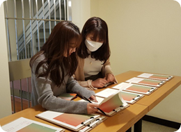
지역밀착 생활실험 지원 2019 질문도서관 제주도민의 이야기를 질문 형식으로 수집, 질문의 답을 찾아가는 경험을 다양한 콘텐츠로 구축한 사업
-
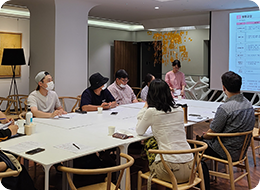
지역밀착 생활실험 지원 생활실험 프로젝트
(리빙랩) 주민이 직접 지속가능한 제주를 위해 일상 속 문제를 발견하고, 탐구하는 (상시형 , 기획형 ) )지원 사업 -
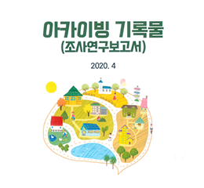
지역밀착 생활실험 지원 제주시 마을 소통 공간 활용을 위한 현장조사 마을 내 공유 공간을 발굴하고 공간의 이용 현황을 조사한 사업
-
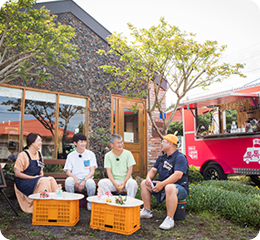
참여저변확대·거버넌스 구축 찾아가는 톡톡버스 삶의 현장으로 찾아가 지역의 이슈를 찾고, 주민들과 대화로 풀어내며 공감대를 확산 방송프로그램 단행본 제작 ※2020년 7월~9월, 제주 MBC 웃음주식 회사 속암수다 프로그램 방영
-
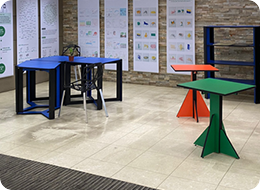
공간 조성·운영 제주의 지속가능한 제조
(ㅈㅈㅈ) 프로젝트 제주의 내부 자원과 인프라를 활용한 지속가능한 제조 실험 사업 -
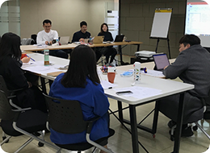
공간기반 혁신활동 혁신활동 실험실 운영 제주의 내부 자원과 인프라를 활용한 지속가능한 제조 실험 사업
-
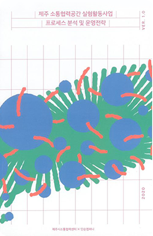
연구·아카이브 소통협력공간 실험 활동사업 프로세스 분석 및 운영 전략 연구 소통협력공간의 효과적인 실험 활동을 위한 프로세스 개발
-
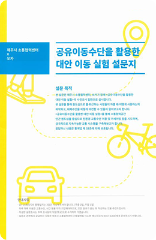
지역밀착 생활실험 지원 공유이동수단을 활용한 대안 이동 실험 원도심을 중심으로 친환경과 교통수단 이용 및 카셰어링 등을 시도하며, 궁극적으로 지속가능한 교통 시스템을 구축해보는 실험 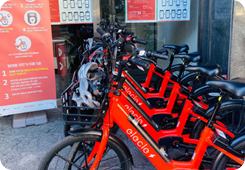
-
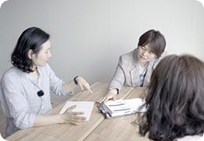
지역밀착 생활실험 지원 제주로 만난 사이 제주의 삶, 지역의 이슈에 관해 공통의 관심사를 가지고 해결해 나가고자 하는 주민 간 만난과 연결을 지원하는 (주민참여 오픈형, 기획형) 사업
-
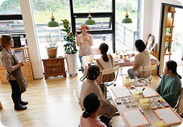
공지역밀착 생활실험 지원 놀러가게 프로젝트 지역 내 공간을 기반으로 다양한 사람들의 만남을 지원하고, 커뮤니티 형성의 기회 마련
-
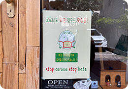
지역밀착 생활실험 지원 원도심 상점들과 함께하는 코로나19 캠페인 코로나19로 어려움을 겪고 있는 원도심 지역 사인들과의 상생과 협력을 위한 캠페인
-
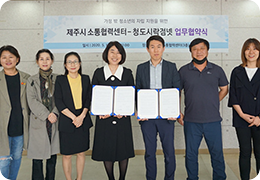
지역밀착 생활실험 지원 청소년 협력 네트워크 청소년 자립을 주제로 제주지역 내 청소년 · 청년 관련 기관과 단체들의 네트워킹 사업
-
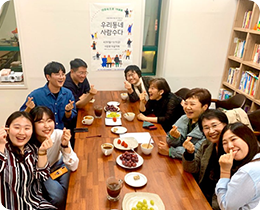
참여저변확대·거버넌스 구축 언컨퍼런스 다양한 세대와 계층이 모여 지역의 문제와 해결방안을 자유롭게 대화하고 소통한 컨퍼런스
-
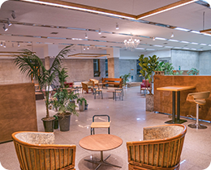
공간 조성·운영 함께쓰는거실 + 머그월 소통협력공간 리노베이션 기간 전, 시민 들이 활용할 수 있는 제주시의 공유 공간과 자원의 인프라 조성 사업 지속 가능한 제주를 위한 일회용품 사용 줄이기에 대한 참여 유도 프로젝트
-
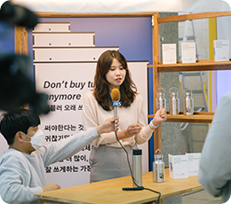
참여저변확대·거버넌스 구축 지역공론장 시민의 의견 및 제안이 공공의 이슈로 발화될 수 있도록 시민 주도형 대화의 장 마련 관련 분양 전문가, 기획자 등과 협력하여 단계별 논의와 액션(캠페인 등)이 실현될 수 있도록 지원
-
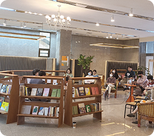
공간 조성·운영 2020 컨시어지 및 질문도서관 소통협력공간 방문자 및 이용자를 대상으로 사람들 간 실제 상호작용과 소통이 일어날 수 있도록 이용자들의 필요에 맞는 정보나 사람, 서비스가 연결되는 적극적 매개공간으로 조성 및 운영